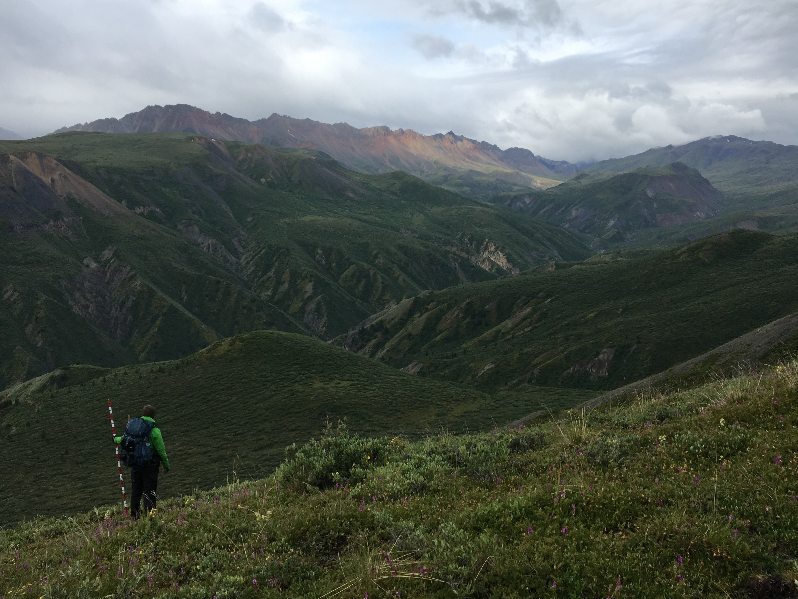
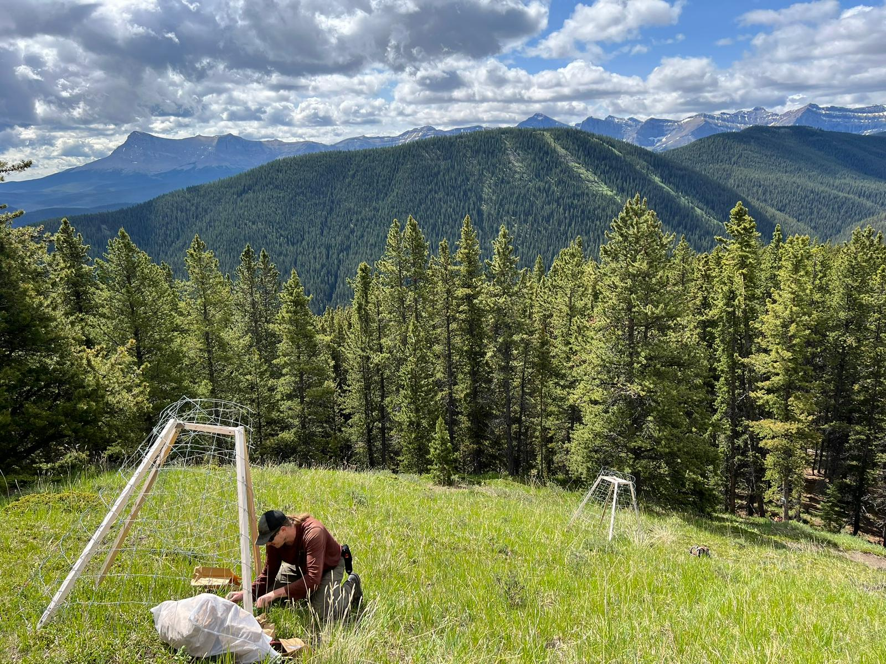

Field Work
In the Field

Caribou telemetry in the Muskwa-Kechika Management Area

Camera trap and ARU deployment, Alberta's foothills

Bird and shrub surveys on Yukon mountains

Aerial view of the northern boreal forest

Field work in the Rocky Mountain foothills, Alberta

Remote range exclosures in the foothills of the Rocky Mountains of Alberta